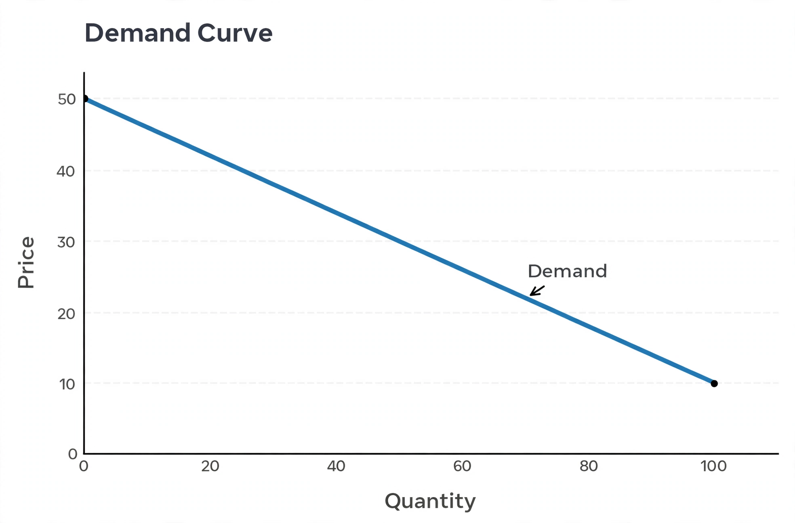

Law of demand
| Law of demand | |
|---|---|
 A demand curve: as price falls, quantity demanded rises | |
| Field | Microeconomics |
| Statement | As the price of a good increases, quantity demanded decreases, ceteris paribus |
| Exceptions | Giffen goods, Veblen goods |
The law of demand is a fundamental principle of microeconomics which states that, all else equal (ceteris paribus), as the price of a good or service increases, the quantity demanded decreases; conversely, as the price decreases, the quantity demanded increases. Graphically, this produces a downward-sloping demand curve, relating price to quantity.
Explanation
Two mechanisms underlie the law. The substitution effect: when a good's price rises, consumers switch toward relatively cheaper substitutes. The income effect: a price rise reduces consumers' real purchasing power, so they buy less of the good (for normal goods). Together these normally outweigh any contrary tendencies. The law was given mathematical expression in the 19th century by economists including Antoine Augustin Cournot, and was popularised in diagrammatic form by Alfred Marshall in his Principles of Economics (1890).
Demand versus quantity demanded
Economists distinguish a change in quantity demanded — movement along the demand curve caused by a price change — from a change in demand itself, a shift of the whole curve caused by changes in income, tastes, expectations or the prices of related goods. Only the former is governed by the law of demand.
Exceptions
Certain apparent exceptions exist. Giffen goods are inferior goods so strongly subject to the income effect that demand rises when price rises; the classic (though disputed) example is staple foods for very poor households. Veblen goods, such as luxury items, may be demanded more at higher prices because price itself signals status. Expectations of further price rises can also temporarily increase current demand, as in asset bubbles. These cases are generally treated as special circumstances rather than refutations of the law for ordinary goods.